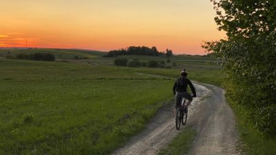
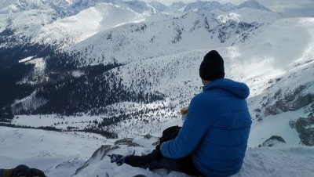
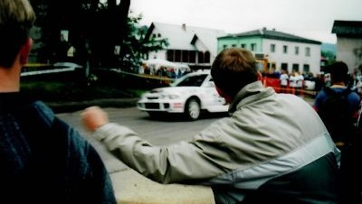

Coding40
Home
MyProjects
previous non-responsive web design
Java Scripts
My tests
Other
Skills
Testing
Experience
Leisures
Contact
send
Leisures
What You can do when you're not coding
cycling during the day

...in the evening...
...and through the night
or a bit faster...

eating sandwich on the summit
getting covered by frost
trekking through the forests
climbing on the rocks

smell some gasoline and burnt rubber
read some fiction
do some stuff
watch some birds